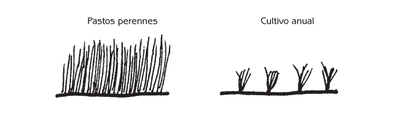
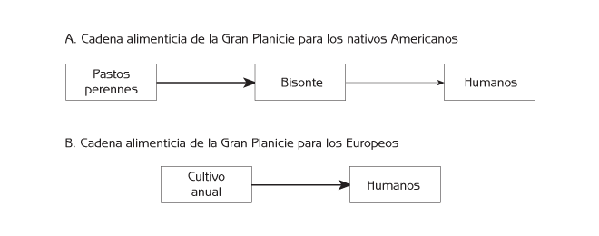
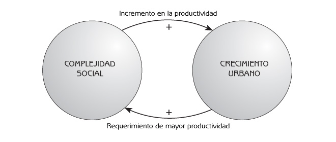
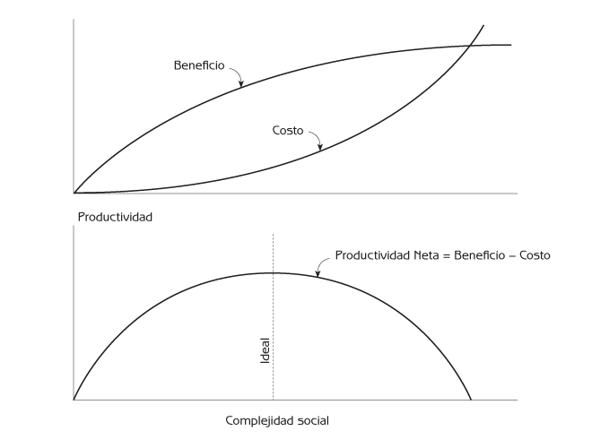
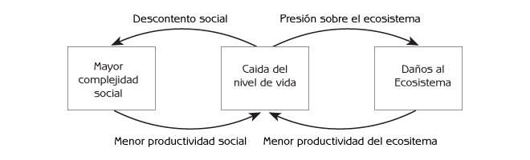
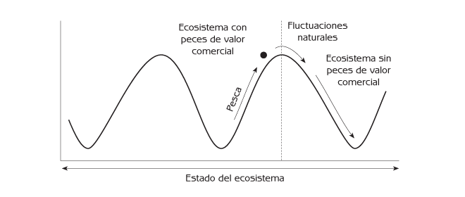
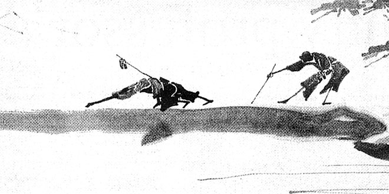

Ecología Humana
Conceptos Básicos para el Desarrollo Sustentable
Autor: Gerald G. Marten
Editorial: Earthscan Publications
Fecha de publicación: November 2001, 256 pp.
Edición en rústica: 1853837148
Edición en pasta dura: 185383713X
← Consulte el índice completo del libro.
Capítulo 10 Interacciones no sustentables entre Humanos y Ecosistemas
- Migraciones Humanas
- Nuevas Tecnologías
- Capital Portátil en una Economía de Mercado Libre
- La Tragedia de los Recursos Comunes
- Grandes Insumos a Ecosistemas Agrícolas y Urbanos
- La Urbanización: el Enajenamiento de la Naturaleza
- El Auge y Decadencia de Sociedades Complejas
- Quimeras y el Principio Precautorio
- Puntos de Reflexión
Las experiencias previas, así como actuales, de interrelaciones entre las personas y los ecosistemas pueden enseñarnos cómo evitar cometer errores. Los problemas ambientales no son del todo nuevos. Aunque la mayoría de las sociedades del pasado convivieron en armonía con el medio ambiente, ha habido ocasiones en que sociedades en particular presentaron interacciones insostenibles con el medio ambiente. Considerando las consecuencias, es natural preguntarnos: “¿Cómo pudieron nuestros antepasados cometer errores tan serios, y porque la sociedad moderna continúa repitiendo esos errores hoy en día?
En general, podemos considerar que la interrelación entre las personas y los ecosistemas es sustentable cuando el sistema social y el ecosistema se han coadaptado. De igual manera, la sustentabilidad de la interrelación es menor cuando la coadaptación es débil. Los cambios bruscos, tanto en el sistema social como en el ecosistema, pueden trastornar la coadaptación, desencadenando una serie de efectos que reducen la habilidad del ecosistema de proveer servicios esenciales. Este capítulo ilustrará cómo la coadaptación puede perderse debido a migraciones de poblaciones a sitios nuevos con ecosistemas distintos – ecosistemas con los que carecen experiencia previa. También mostrará cómo la coadaptación puede decaer tras cambios sociales bruscos, como los debidos a nuevas tecnologías.
Después este capítulo abordará las fuerzas sociales que impiden la sustentabilidad en las interrelaciones entre los sistemas sociales modernos y los ecosistemas. Los problemas fundamentales en las interrelaciones entre humanos y ecosistemas es la expansión de la población humana y de su economía, cuyas demandas sobre los ecosistemas son excesivas. Este capítulo describirá cómo las instituciones económicas modernas motivan al individuo a hacer uso de los recursos de los ecosistemas de manera no sustentable. Examinará el papel de la urbanización, la cual erosiona la coadaptación entre los sistemas sociales y ecosistemas, al enajenarse la población urbana de su sistema de apoyo ambiental. El ascenso y caída de civilizaciones previas nos brinda lecciones sobre la urbanización y el desarrollo económico que actualmente proceden a nivel global. Este capítulo demostrará cómo la agresiva explotación comercial de recursos naturales puede llevarnos a idealizar la intensidad de explotación que puede soportar un ecosistema. Terminará ofreciendo el principio precautorio como una manera prudente de garantizar el uso sustentable de los recursos naturales ante la incertidumbre sobre la merma de recursos que puede aguantar un ecosistema.
Migraciones Humanas
Las interrelaciones insostenibles entre personas y ecosistemas frecuentemente se asocian con migraciones humanas. Cuando gente llega a un nuevo lugar donde el ecosistema es distinto, típicamente tienen un conocimiento muy limitado del nuevo ecosistema y por tanto carecen de las instituciones sociales y tecnologías necesarias para tener una interrelación sustentable. Aparentemente esto fue lo que sucedió cuando los primeros habitantes de las Américas arribaron desde Asia hace aproximadamente 13,000 años. Al llegar estas personas, Norte América tenía numerosas especies de grandes mamíferos similares a la impresionante fauna de la actual África Oriental. La mayoría de estos grandes mamíferos desaparecieron dentro de pocos siglos de haber llegado los humanos, posiblemente debido a la caza excesiva. No sabemos con seguridad si los Nativos Americanos fueron los responsables, pero es muy probable que lo sean. Muchas especies de grandes animales también desaparecieron de Europa y Australia poco después del arribo de los humanos a esos continentes.
Durante los siglos subsiguientes, los sistemas sociales de los indígenas Americanos coevolucionaron junto con sus ecosistemas hasta que los sistemas sociales y ecosistemas lograron coadaptarse. Mientras que las culturas de distintas tribus Americanas, así como los detalles de sus relaciones con el medio ambiente, eran diversas, tenían en común algunas instituciones sociales para garantizar la interrelación sustentable con el ecosistema. El territorio tribal era importante para definir la propiedad común de los recursos, tales como el venado y otros animales cazados sustentablemente por los nativos Americanos.
La coadaptación no implica que los indígenas Americanos dejaron su ambiente en un estado completamente natural. De hecho, modificaron sus ecosistemas de varias maneras. Utilizaron el fuego para crear parcelas en las primeras etapas de la sucesión ambiental, como las praderas, en partes de Norteamérica que eran primordialmente bosque clímax. Con una diversa mezcla de distintas etapas de sucesión ecológica crearon un mosaico territorial más favorable a la caza y un mayor número de “servicios” ambientales que los obtenidos de un solo tipo de ecosistema.
La Gran Planicie de Norteamérica tenía tierras profundas y fértiles, con densos y altos pastos perennes que eran el sustento de las enormes manadas de bisonte. Estos pastos perennes eran una mezcla de especies nativas, un policultivo natural adaptado a las condiciones ventosas de la Gran Planicie. Al ser perennes, los pastos cubrían la tierra por completo durante todo el año, protegiéndolo de la erosión (Véase la Figura 10.1) Los nativos Americanos se adaptaron al ecosistema de la Gran Planicie al utilizar al bisonte como su recurso primordial (Véase la Figura 10.2ª). Dado que su religión enfatizaba un respeto por la naturaleza, la fauna silvestre solo podía ser cazada para alimentación o para cubrir alguna otra necesidad básica. Utilizaban casi la totalidad del cuerpo del animal para surtirse de alimento, ropa y materiales de construcción para su vivienda.

Figura 10.1 Comparación del ecosistema de la Gran Planicie (pastos perenes) con cultivos anuales sembrados por los Europeos.

Figura 10.2 Cadena alimenticia para la gente de la Gran Planicie antes y después de la invasión Europea de Norteamérica.
Cuando los europeos invadieron Norteamérica hace aproximadamente 300 años, explotaron los recursos de Norteamérica de manera insostenible por no tener los valores, conocimientos, tecnología y demás instituciones sociales indicados para una interrelación sustentable con el medio ambiente de Norte América. Percibieron como ilimitados los vastos recursos del continente, considerando la transformación de ecosistemas naturales en ecosistemas agrícolas y urbanos de diseño Europeo como progreso inequívoco. Consideraron el sistema social de los nativos Americanos como una etapa primitiva de la evolución social humana, inadecuada a los tiempos modernos. Muchos europeos creían que los nativos eran una raza inferior destinada a la extinción.
Cuando los inmigrantes Europeos llegaron a la Gran Planicie, vieron al bisonte como una fuente de dinero. Cazadores profesionales mataron a millones de bisontes, vendiendo sus pieles al mercado internacional. En tan sólo 20 años la población de 60 millones de bisontes fue reducida a la insignificancia. Los nativos Americanos de la Planicie sufrieron de hambruna y desesperación cuando el bisonte – su base alimenticia – fue destruido y su tierra fue ocupada y cultivada por numerosos europeos. Los indígenas respondieron con guerras, pero perdieron la guerra y la tierra, siendo reducidos a una existencia marginal.
Los agricultores Europeos que reemplazaron a los indígenas de la Gran Planicie sembraron monocultivos de trigo, maíz y otros cultivos anuales (Véase la Figura 10.2b). Estos cultivos formaron una cadena alimenticia más corta que la de los pastos y bisontes, por lo que los agricultores fueron capaces de capturar un mayor porcentaje de la producción biológica de la Gran Planicie en relación a la contraparte obtenida por el indígena del bisonte. Sin embargo, en contraste con la vegetación natural de la Gran Planicie, estos cultivos no estaban adaptados para proteger la tierra de la erosión eólica. Los cultivos anuales son plantas alimenticias que presentan una nueva generación cada año. No cubren la tierra por completo, como lo hacen los pastos perennes, y dado que los cultivos anuales solo cubren las parcelas durante parte del año, la tierra está desprotegida durante el resto del año (Véase la Figura 10.1). Este tipo de agricultura funcionaba bien en condiciones Europeas, donde la erosión del viento no es un problema tan serio, pero no podía proteger a la tierra de la erosión en las condiciones climáticas de la Gran Planicie. Consecuentemente desde que los europeos introdujeron la agricultura a la Gran Planicie, el viento se ha llevado a la mayoría de su mantillo. La tierra ha perdido su fertilidad y ahora solo es productiva con la aplicación de fertilizantes. La última entrada en la historia de la Gran Planicie nos llega de un pequeño número de científicos que laboran por desarrollar nuevos ecosistemas agrícolas basados en el policultivo de pastos perennes nativos que brinden granos en cantidades de utilidad comercial. Los ecosistemas agrícolas que imiten al ecosistema natural de la Gran Planicie deberían reducir la erosión al proteger mejor a la tierra.
Las migraciones siguen siendo de importancia mundial, ya que millones de personas salen de zonas sobrepobladas a zonas despobladas en busca de tierras. Los gobiernos frecuentemente promueven estas migraciones. Esta política es ecológicamente malsana cuando la migración es a zonas cuya capacidad de carga humana no puede ser ajustada rápidamente con tecnología moderna. Los inmigrantes frecuentemente dañan el medio ambiente, reduciendo su capacidad de carga no solo por sus números que los obligan a sobre-explotar los recursos locales, sino también debido a que su tradición cultural no les brinda una cosmovisión, valores, conocimientos, tecnologías e instituciones sociales necesarias para relacionarse con su nuevo medio ambiente.
En años recientes, millones de personas han migrado de las superpobladas tierras bajas de Asia hacia las regiones montañosas de menor población en países como Vietnam y las Filipinas. Previamente, relativamente pocas personas vivían en las montañas debido a que la capacidad de carga de las montañas es menor a la de los valles y planicies costeras con su tierra plana, profunda y fértil. Los montañeses cultivaron las empinadas tierras serranas durante siglos sin incurrir en daños ambientales porque sus métodos agrícolas estaban coadaptados al ecosistema montañés. La gente de las tierras bajas que llega a las montañas frecuentemente utiliza técnicas agrícolas que no son sustentables en las montañas porque su agricultura no están diseñada para proteger a las empinadas laderas de la erosión.
Algo similar ocurre con las migraciones humanas a las selvas tropicales. Millones de Brasileños han migrado al Amazonas, y millones de Indonesios se han mudado de la sobrepoblada isla de Java para cultivar otras islas, donde los exuberantes bosques han prosperado durante miles de años en algunas de las tierras más pobres del planeta. Los ecosistemas selváticos retienen la fertilidad de sus tierras con adaptaciones complejas que evitan la merma de los escasos nutrientes y minerales del ecosistema forestal. Hasta hace poco, los pobladores de los bosques lluviosos eran pocos y utilizaban el bosque de maneras que no interferían con la sustentabilidad del ecosistema, tales como la caza, recolección de frutos y la agricultura de tala y quema.
Actualmente un gran número de personas está talando los bosques lluviosos y reemplazando estos ecosistemas selváticos con granjas que son insostenibles en las tierras pobres de la selva. Sus ecosistemas agrícolas carecen de los complicados mecanismos que permiten a los ecosistemas selváticos y la agricultura tradicional retener la fertilidad de la tierra. Estos inadecuados ecosistemas agrícolas dejan de producir en pocos años. La parcela entonces puede usarse para ganadería, produciendo carne para exportación a países industrializados (el “efecto hamburguesa”). Eventualmente hasta los pastos dejan de crecer, o bien el forrajeo mismo induce una sucesión a pastos no aptos para el ganado, y la tierra es abandonada. Se trata de “desiertos tropicales” con tierras tan degradadas que tardan muchos años en volver a soportar la selva, o el uso humano. Los inmigrantes entonces vuelven a mudarse, buscando más bosque qué talar para cultivar tierras que aún no han degradado. Con el tiempo, estos agricultores inmigrantes acabarán con la selva sin haber encontrado un lugar apropiado dónde establecerse.
La historia de las migraciones humanas nos demuestra que las interrelaciones entre las personas y los ecosistemas cambian a lo largo del tiempo. Los inmigrantes traen consigo un sistema social inadaptado al nuevo medio ambiente, pero con el tiempo tienen el potencial de reorganizar y ajustar sus sistemas sociales a estas nuevas condiciones. Los problemas de actividades insostenibles de inmigrantes se harán cada vez más frecuentes a la vez que más y más personas de países en desarrollo migran de zonas superpobladas a regiones de menor población, pero que también son las regiones menos indicadas para absorber una explosión demográfica. La lección más importante de estos ejemplos es que la gente puede aprender y adaptarse. Las políticas nacionales e internacionales para el desarrollo sustentable necesitan facilitar este proceso de aprendizaje por parte de los inmigrantes a manos de los lugareños que llevan generaciones viviendo en la misma región, para adaptarlos lo más pronto posible a su nuevo ambiente y minimizar el daño ambiental que puedan causar.
Nuevas Tecnologías
Las personas comúnmente causan daños ambientales extensos al adoptar nuevas tecnologías. Desconocen las consecuencias ambientales de la nueva tecnología, y su sistema social carece de instituciones que faciliten el uso de la tecnología de manera ecológicamente sustentable. Por ejemplo, las sociedades que subsisten de la caza tradicional utilizan armas como lanzas, arco y flecha, o dardos venenosos, las cuales no son lo suficientemente efectivas para afectar las poblaciones de los animales de los cuales se alimentan. Por ello no había problema en cazar cuantos animales pudieran. Sin embargo, los mismos recursos pueden ser sobre explotados cuando se introduce una nueva tecnología, como las armas de fuego, y los cazadores continúan matando cuantos animales puedan. Los conocimientos del cazador pueden ser exhaustivos, pero su cultura no habrá desarrollado una ética de conservación si en tiempos pasados nunca hizo falta. Los pescadores en todo el mundo ahora usan redes de mono-filamentos de nylon, las cuales son mucho más eficaces que las redes tradicionales porque los peces no las pueden ver en el agua. El resultado ha sido una severa sobrepesca y una decaída en las poblaciones de peces en muchas partes del mundo.
Los cambios de mercado pueden irrumpir el uso sustentable de los recursos naturales porque las nuevas oportunidades de mercado fomentan el uso de tecnologías productivas por parte de personas con poca experiencia en su uso. Por ejemplo, el crecimiento explosivo de las ciudades en los países en vías de desarrollo en años recientes ha facilitado la expansión del mercado para cultivos europeos, como son la col, fomentando la producción comercial a gran escala de estos cultivos en montañas donde previamente no eran cultivadas. Las laderas de cerros en los trópicos son muy susceptibles a la erosión. Si no son protegidas de la lluvia por plantas que cubren la tierra, las aguas pluviales pueden llevarse cientos de toneladas de tierra por hectárea cada año. Los ecosistemas agrícolas tradicionales han sido sustentables durante siglos porque utilizan cultivos que cubren la tierra y la protegen de la erosión. La mayoría de los cultivos europeos no cubren la tierra porque proceden de ecosistemas agrícolas europeos que evolucionaron bajo condiciones topográficas y climáticas muy distintas. Los cultivos europeos son sustentables en su lugar de origen, pero insostenibles en laderas tropicales donde las parcelas con estos cultivos pueden perder tanta tierra que la agricultura eventualmente se vuelve imposible.
Capital Portátil en una Economía de Mercado Libre
Las convenciones económicas comúnmente animan a la gente a utilizar recursos renovables de manera insostenible. Una manera común de utilizar bosques de manera sustentable es talar un pequeño porcentaje de los árboles cada año. Si se talan demasiados árboles, la población de árboles decaerá y eventualmente desaparecerá. El porcentaje de los árboles de un bosque que pueden ser talados de manera sustentable cada año depende de la tasa de crecimiento de los árboles. Si el árbol es de crecimiento rápido, el porcentaje a talarse será mayor. Una tasa de crecimiento típica para árboles de bosques templados es de 5 por ciento anual. Para usar estos bosques de manera sustentable es preciso no talar más del 5 por ciento de los árboles cada año.
Considere este caso hipotético. Tiene 10 hectáreas de bosque y dos opciones. Puede cortar el 5 por ciento de la madera de manera sustentable cada año. O puede cortar todos los árboles lo más pronto posible, vender la madera e invertir el dinero en otra empresa. Si invierte su dinero en otra empresa, la ganancia será de 10 por ciento anual. Sin embargo, si corta todos los árboles, tardará 40 años en volver a haber árboles maduros que talar para obtener más madera. Cual opción le permite obtener más dinero a largo plazo:
- ¿Cosechar el bosque de manera sustentable?
- ¿Talar el bosque entero e invertir las ganancias en otra empresa?
La segunda opción brinda mayores ganancias a largo plazo. Este ejemplo demuestra el conflicto fundamental entre el afán de lucro y el uso sustentable de los recursos naturales. Nuestro sistema económico moderno influye dramáticamente sobre la manera en que utilizamos los recursos naturales renovables porque el capital es “portátil”. El capital es portátil porque el dinero puede moverse fácilmente de una empresa a otra. Si las decisiones sobre el uso de los recursos naturales renovables se basan exclusivamente en las utilidades, aún utilidades a largo plazo, los recursos naturales renovables serán cosechados de manera sustentable únicamente si su tasa de crecimiento biológica es mayor a la tasa de crecimiento de inversiones alternativas. Dado que el crecimiento de la economía mundial hoy en día es mayor a la tasa de crecimiento de la mayoría de los recursos renovables, existen fuertes incentivos para utilizar los recursos de manera insostenible. Si aceptamos las reglas del juego en una economía de mercado libre, es lógico utilizar los recursos renovables de manera insostenible cada vez que la producción biológica no pueda competir con inversiones alternas.
La Tragedia de los Recursos Comunes
Los recursos comunes son aquellos compartidos por mucha gente. La atmósfera, océanos, ríos y lagos son bienes comunes que nos brindan recursos naturales y absorben la contaminación. Los bosques, tierras de forrajeo y aguas de irrigación también pueden considerarse recursos comunes. Muchos de estos recursos carecen de títulos de propiedad. Estos recursos comunes son de acceso abierto; pueden ser utilizados por cualquiera al grado que sea. Los recursos comunes de acceso abierto son vulnerables a la sobreexplotación, por no haber un responsable de controlar la intensidad del uso que se les da.
A la sobreexplotación bajo estas condiciones se le conoce como la Tragedia de los Recursos Comunes. Lo ideal para el usuario individual no es lo ideal para todo el conjunto de usuarios. Por ejemplo, la atmósfera es un recurso contaminado por el escape de automóviles. La contaminación debida a un solo automóvil es negligente, pero la contaminación debida a todos los vehículos de una ciudad puede implicar importantes riesgos a la salud. El dióxido de carbono de las emisiones vehiculares contribuye al cambio climático que afecta tan drásticamente el ecosistema global.
La pesca excesiva demuestra cómo la Tragedia de los Recursos Comunes es consecuencia de las decisiones “racionales” por parte de usuarios individuales en su intento por maximizar su obtención del recurso. Lo mejor para la pesca sustentable es que todos los pescadores limiten el número de redes utilizadas a la cantidad óptima, como en la Figura 10.3 (punto A). Si se utilizan demasiadas redes la población de peces será reducida de tal manera que la captura de todos los pescadores será menor (punto B). La tragedia ocurre porque las redes de cada pescador individual son incapaces, por si solas, de afectar negativamente a la población de peces de manera notable. Cada pescador sabe que pescará más peces utilizando más redes, independientemente del número de redes utilizadas por los demás pescadores. Para un pescador individual, duplicar el número de redes implica duplicar los peces capturados (A2) porque las redes de un solo pescador no pueden capturar suficientes pescados como para afectar la población de peces. Sin embargo, si todos los pescadores utilizan más redes, acabarán captando pescados en cantidades que afectan negativamente la población de peces y la captura a largo plazo disminuirá (punto B). La Tragedia de los Recursos Comunes causa que los pescadores cada vez usen más y más redes hasta que la población de peces acaba por desaparecer, porque aún en condiciones de sobreexplotación, cada individuo pescará más al utilizar más redes que los demás. Un pescador que usa menos redes cuando todos los demás pescan en exceso, es castigado con una captura mucho menor (B1).
![Figura 10.3 – La relación entre la captura de peces y la intensidad de pesca es un ejemplo de la Tragedia de los Recursos Comunes. A Todos los pescadores usan menos redes para obtener un rendimiento sustentable alto. B Todos los pescadores usan más redes. Todos pescan menos porque la pesca excesiva reduce la población de peces. A2 Un pescador usa el doble de redes cuando los demás utilizan menos redes de manera sustentable. B1 Un pescador usa menos redes cuando todos los demás pescan de más. B2 Un pescador usa el doble de redes que los demás que también están pescando en exceso.](images/10-03-spanish.gif)
Figura 10.3 – La relación entre la captura de peces y la intensidad de pesca es un ejemplo de la Tragedia de los Recursos Comunes. A Todos los pescadores usan menos redes para obtener un rendimiento sustentable alto. B Todos los pescadores usan más redes. Todos pescan menos porque la pesca excesiva reduce la población de peces. A2 Un pescador usa el doble de redes cuando los demás utilizan menos redes de manera sustentable. B1 Un pescador usa menos redes cuando todos los demás pescan de más. B2 Un pescador usa el doble de redes que los demás que también están pescando en exceso.
La Tragedia de los Recursos Comunes es lógica para los individuos, pero no para la sociedad. Evitar la Tragedia de los Recursos Comunes es casi imposible cuando existe acceso abierto a los recursos, pero puede ser evitado si el recurso es propiedad de algún individuo o comuna que regule quien lo explota y de qué manera. Esto se conoce como acceso cerrado. Los recursos de acceso cerrado también pueden ser sobreexplotados, pero esta sobreexplotación puede ser evitada si los propietarios tienen instituciones sociales, reglas de conducta comunitaria, que les den la autoridad para garantizar que todos utilicen el recurso de manera sustentable. El próximo capítulo definirá algunas instituciones sociales que pueden evitar la Tragedia de los Recursos Comunes.
Grandes Insumos a Ecosistemas Agrícolas y Urbanos
La gente crea ecosistemas agrícolas y urbanos aportando materiales, energía e información para modificar la estructura de los ecosistemas para que estos funcionen de manera más acorde a las necesidades humanas. En el pasado, estos insumos de energía provenían del trabajo del hombre y sus animales. Hoy en día, la mayor parte de esta energía proviene de combustibles fósiles.
Existe una relación importante entre los insumos al ecosistema y la sustentabilidad: los ecosistemas agrícolas y urbanos son menos sustentables a largo plazo si se requieren de grandes aportaciones antropogénicas para mantenerlo funcionando adecuadamente. Esto se debe a que es difícil garantizar estas grandes aportaciones de manera fiable a largo plazo.
La experiencia de las antiguas civilizaciones del Medio Oriente es un buen ejemplo. Las civilizaciones del Medio Oriente siempre han dependido de la irrigación para su agricultura debido a que el clima árido limita severamente la producción biológica natural. A lo largo de los ríos de Mesopotámia se desarrollaron ciudades como Babilonia porque las aguas de los ríos fueron utilizadas para crear ecosistemas agrícolas que mantenían a las ciudades. Las ciudades perduraron durante siglos, pero eventualmente colapsaron y fueron enterradas bajo las arenas del desierto al desplomarse su agricultura.
Los motivos del colapso agrícola en estas antiguas civilizaciones son variadas y complejas, pero tienen en común una incapacidad para darle mantenimiento a los canales de irrigación que transportaban el agua del río a los sembradíos. Las aguas de los ríos contienen sedimentos (tierra erosionada en suspensión) que se precipita en el fondo de los canales de irrigación. Si no se remueve este sedimento, continua acumulándose hasta llenar el canal, imposibilitando su uso para transportar agua. En tiempos antiguos, se requería de la labor de personas y animales para limpiar el sedimento de los canales. Actualmente en los países industrializados, este trabajo se hace con máquinas impulsadas con hidrocarburos.
Las civilizaciones del Medio Oriente utilizaron grandes cantidades de madera para la construcción de sus ciudades. La madera, como el agua, provenía de las montañas. Con el paso de los siglos la deforestación y el forrajeo por parte de cabras acabaron con la vegetación que evitaba la erosión de las montañas. Incrementó la sedimentación en los ríos, y correspondientemente en los canales de irrigación, requiriéndose cada vez más y más aportaciones de energía humana y animal para mantener limpios los canales. Antes de la deforestación, la naturaleza hacía la labor de mantener limpios los canales brindando agua limpia, sin sedimento. Después de la deforestación, esta labor fue transferida a la gente. Eventualmente los niveles de sedimentación superaron la capacidad humana, particularmente cuando la mano de obra era exigida en otros sectores de estas complejas sociedades, por ejemplo, por emergencias como las guerras. Los canales se llenaron de tanto sedimento que fue imposible canalizar el agua de los ríos a los sembradíos, la agricultura se desplomó y lo mismo hizo la civilización. En estos casos los ecosistemas agrícolas fueron insostenibles porque los sistemas sociales fueron incapaces de mantener los insumos de energía necesaria para su mantenimiento.
La Urbanización: el Enajenamiento de la Naturaleza
La necesidad innata de los humanos por aprender sobre la naturaleza es evidente al observar la curiosidad que tienen los niños por la naturaleza y la intensidad con que exploran su ambiente natural al jugar. La experiencia de la niñez genera lazos emocionales con la naturaleza, y un conocimiento íntimo y concreto de la naturaleza en la localidad donde el niño vive. Esta necesidad emotiva por la naturaleza ha sido llamada biofilia. El proceso de impresión (“imprinting”) en la niñez, tan esencial para el desarrollo pleno de la biofilia, parece ser fundamental para la mente humana, pero solo puede darse si el niño tiene acceso a la naturaleza – una oportunidad negada a los niños que viven en ciudades sin ecosistemas naturales al alcance. La resulta puede ser una carencia de lazos sentimentales con la naturaleza, y de los conocimientos necesarios para una interrelación sustentable, por parte de los adultos. Puede ser que ninguna cantidad de tratados internacionales, reglamentos y planes gubernamentales, o incluso clases formales en escuelas, sean suficientes si en el fondo la gente carece del amor y respeto por la naturaleza que los motive a realizar sus actividades cotidianas en maneras que no destruyan su sistema ambiental de sustento.
Podemos apreciar el impacto potencial del contacto con la naturaleza durante la niñez imaginando una sociedad futurista en que los niños son separados de sus familias al nacer y criados en dormitorios. Aún si los niños son indoctrinados diariamente en la escuela sobre el amor y respeto a sus padres, la manera en que se relacionarán con sus padres como adultos será fundamentalmente diferente a como lo harían adultos que de niños fueron cargados en los brazos maternos y disfrutaron de toda la riqueza del entorno familiar durante la niñez. Igualmente la inquietud por el medio ambiente que proviene exclusivamente de la escuela, carecerá la profundidad y solidez necesaria para que una sociedad sea ecológicamente sustentable.
El Auge y Decadencia de Sociedades Complejas
La extensa diferenciación y especialización de los papeles sociales y la elaborada organización de las actividades humanas son características sobresalientes de la complejidad de los sistemas sociales urbanos. Puede apreciarse el rol de la complejidad social en el auge y caída de ciudades de civilizaciones antiguas, como las de Mesopotamia, Egipto y Grecia, así como en las civilizaciones indígenas de los Maya y Pueblo en el Hemisferio Occidental. Estas culturas experimentaron ciclos de auge y decaída que duraron siglos. Los imperios Europeos sufrieron un proceso similar de crecimiento y colapso durante los últimos 400 años.
El crecimiento de las sociedades complejas
Previo a la Revolución Agrícola, los ecosistemas urbanos fueron simples aldeas. Eran pequeñas y en gran parte independientes unas de otras. Eran igualitarias, cada quien con un mismo estatus. Había división de labores según el género, pero el número de roles sociales era mínimo. Casi todos eran todólogos, haciendo todo lo necesario por subsistir. La mayoría de las familias producían sus propios alimentos, vestimenta y vivienda. Había un mínimo de especialización en que las sociedades más simples tenían, por ejemplo, 25 roles ocupacionales. Aunque fueron sofisticadas en otras formas, todos los sistemas sociales previos a la Revolución Agrícola fueron relativamente simples en cuanto a roles ocupacionales. En rincones aislados del mundo persisten aún de esta manera algunas sociedades pre-industriales.
La creación de ciudades como ecosistemas urbanos cada vez más grandes y complejos solo es posible cuando los ecosistemas agrícolas son lo suficientemente productivos como para generar un excedente de abasto superior a las necesidades de las familias que produce el alimento. El alimento adicional permite a los citadinos especializarse en una variedad de profesiones no-agrícolas. Ésta división de labores forma el núcleo de la complejidad social. Es típico en sociedades modernas tener más de 10,000 roles profesionales en una sola gran ciudad.
Muchas de estas profesiones laboran en apoyo a las actividades productivas de la sociedad, haciéndolas más efectivas. También surge la oportunidad para que florezcan artistas e innovadores. A la riqueza de la vida contribuyen todos, ceramistas y poetas, ingenieros y científicos, maestros y sacerdotes. Sin embargo, esta extensa división de labores requiere grandes inversiones de tiempo y energía en procesar y comunicar información, distribuir bienes y llevar la cuenta de la titularidad de posesiones y el intercambio de bienes y servicios. Esto es tan cierto hoy como lo fue para civilizaciones pasadas. Los registros de tiempos antiguos frecuentemente contienen voluminosos detalles de intercambios comerciales e inventarios de bienes.
La división del trabajo en sociedades complejas no solo es profesional. Existe una estratificación con respecto al poder y la riqueza, y una jerarquía de autoridades gubernamentales.
Las civilizaciones pasadas se asocian con ciudades, o conjuntos de ciudades, que crecieron en tamaño y complejidad durante siglos, extendiendo su influencia sobre un área cada vez mayor. Esta expansión no siempre fue pacífica y frecuentemente involucraba la explotación de la población conquistada y de sus recursos.
Una vez comenzado el ciclo, es normal que la complejidad continúe creciendo. Esto lleva a mayor crecimiento y expansión, lo cual requiere de mayor productividad, lograda con mayor complejidad (Véase la Figura 10.4). El crecimiento y la complejidad forman un circuito de retroalimentación positiva que incrementa a ambos de manera exponencial. Eventualmente una ciudad puede llegar a dominar un área tan extensa, a ser tan compleja y tener tantos controles sociales, que parecería que su poder y riqueza perdurarán por siempre. Esta es la etapa de equilibrio en el ciclo de sistemas complejos.

Figura 10.4 – Circuito de retroalimentación positiva entre la complejidad social y el crecimiento urbano de las ciudades.
La caída de las sociedades complejas
Eventualmente el sistema social de una compleja civilización se torna demasiado complicado para poder continuar funcionando de manera efectiva. Cuando el nivel de complejidad es mayor al ideal (Véase la Figura 10.5), la mayor complejidad puede resultar en menor productividad debido a que:
- Muchos de los beneficios de la complejidad social tienen rendimientos decrecientes. Una vez que las actividades humanas han llegado a cierto nivel tecnológico y organizativo, los avances en tecnología y organización dejan de dar mayores resultados (véase la curva de beneficios en la Figura 10.5).
- Mantener y organizar la complejidad social tiene costos significativos en términos de energía y el esfuerzo requeridos (véase la curva de costos en la Figura 10.5).
- Los costos continúan aumentando aún en la ausencia de mayores beneficios debidos a la mayor complejidad, por lo que la productividad (que equivale a los beneficios menos los costos) decrece (véase la curva de productividad en la Figura 10.5).
- La sociedad desarrolla valores culturales que fomentan la mayor complejidad. Esto puede llevar a una proliferación azarosa de complejidad careciente de estructura que aporte a la funcionalidad del sistema en conjunto.

Figura 10.5 – Beneficios y costos de la complejidad social.
La resulta es una caída tanto en la productividad social como en el nivel de vida. Podrá parecer lógico que un sistema social demasiado complejo reduzca su complejidad a un nivel idóneo. Sin embargo, los sistemas sociales usualmente se vuelven aún más complejos porque culturalmente se ha desarrollado una creencia en que la complejidad es la mejor manera de resolver problemas.
Al tiempo que una sociedad excede su complejidad óptima, es común que comience a sufrir de serios daños ambientales y comienza la disolución. Los daños debidos a las demandas excesivas sobre el ecosistema se han acumulado durante siglos y finalmente resultan en un colapso en la productividad agrícola y en la carestía de alimentos y otros recursos naturales renovables (véase la Figura 10.6). La sociedad ya no cuenta con el excedente alimenticio y de otros recursos necesarios para sostener a una gran población urbana y mantener sus reservas alimenticias. Al disminuir las reservas de alimentos y otros recursos, la sociedad pierde su habilidad para resistir una mayor caída (la resiliencia será tratada en el capitulo 11).

Figura 10.6 – Circuito de retroalimentación positiva en la fase de decadencia de las sociedades complejas.
Al caer el nivel de vida, surge el descontento dentro de las comunidades en la zona de influencia de la ciudad, y estas intentarán romper sus lazos con la ciudad (véase la Figura 10.6). En respuesta, las autoridades políticas podrán utilizar la fuerza militar para forzar el apoyo de las comunidades aledañas a la ciudad. Las autoridades también podrán canalizar más recursos a obras monumentales o ceremoniales que glorifiquen la imagen de esta civilización. Porque los gastos militares y las obras glorificadoras son costosos al mismo tiempo que no generan productividad, el nivel de vida continuará cayendo. Las exigencias sobre la población y el ecosistema para incrementar la producción en la zona de influencia son cada vez mayores. Los daños ambientales resultan en una menor productividad agrícola y el nivel de vida sigue menguando, y cada vez hay mayor descontento. Este ciclo de retroalimentación positiva puede eventualmente llevar a que la ciudad sea abandonada. Los habitantes migran a lugares con mayores oportunidades (reorganización), y comienza a crecer una nueva ciudad en otra localidad.
El auge y decadencia de las sociedades complejas no es tan solo una historia de antiguas civilizaciones. Los ecosistemas urbanos experimentan ciclos complejos de auge y decadencia en escalas que abarcan desde barriadas y pequeñas ciudades, pasando por grandes ciudades y zonas metropolitanas y civilizaciones enteras. Un barrio crece al absorber gente y actividades comerciales que arriban de otros barrios. Algunas décadas después, el mismo barrio puede decaer al migrar su población y sus comercios a otros barrios. Lo mismo sucede con ciudades enteras a mayor escala temporal.
Dado que este ejemplo de crecimiento, colapso y reorganización urbana es tan viejo como la misma civilización humana, la historia moderna de la explosión demográfica y la economía global en expansión, no es cosa nueva – excepto por un muy importante detalle. Hasta hace poco, el crecimiento y colapso de los ecosistemas urbanos se daban a escala local o regional. Cuando decaían ciudades o civilizaciones, la gente se mudaba a nuevas zonas. Ahora, con un sistema de comunicaciones y transportes globales, y una economía global, los sistemas sociales se están convirtiendo en un solo sistema social global, y los ecosistemas de nuestro planeta están fuertemente entrelazados por actividades humanas. Por primera vez en la historia, el crecimiento tanto en la población como en su complejidad social, se está dando simultáneamente en casi todos los ecosistemas urbanos y sistemas sociales de todo el planeta. Mientras que el auge, caída y migración fueron eventos locales o regionales en el pasado, ahora existe una posibilidad de un colapso global, sin válvula de escape.
Quimeras y el Principio Precautorio
Con el aumento en la concienciación ambiental de los años recientes, muchos gobiernos están tomando medidas para evitar la sobreexplotación y agotamiento de recursos naturales. Irónicamente, algunos recursos renovables se han desplomado desde que comenzaron los esfuerzos por protegerlos. En parte, esto ha sucedido debido a que la explosión demográfica y el crecimiento económico exigen cada vez más servicios ambientales por parte de los ecosistemas. Sin embargo, muchos de los esfuerzos por proteger los recursos naturales han fracasado por una falta de realismo en cuanto a los límites de estos recursos. Esto es hacerse ilusiones.
La historia de las pesquerías marinas durante las últimas dos décadas demuestra los riesgos de armar quimeras. Hace 20 años, las naciones con litorales declararon su posesión del mar y sus recursos a una distancia de 200 millas náuticas de la costa. Estas regiones son conocidas como Zonas Económicas Exclusivas o Mar Patrimonial e incluyen pesquerías, petróleo y minerales. Los gobiernos formularon planes de manejo y reglamentos para controlar la cantidad y tipo de pesca permitida a sus propios pescadores y a los foráneos en estas zonas. Una práctica común era buscar el “mayor rendimiento sustentable” – la mayor captura posible a largo plazo. Los planes de manejo generalmente se desarrollaron con asesoría de la comunidad científica y representantes de la industria pesquera. En los años subsiguientes las pesquerías de numerosas especies comerciales colapsaron a pesar de las medidas establecidas para su protección. Muchos de los planes de manejo no fueron del todo exitosos. ¿Porqué sucedió esto?
En primer lugar porque los científicos tuvieron que trabajar con información imprecisa, y los planes de manejo comúnmente no contemplaron la posibilidad de que los cálculos en cuanto a la producción pesquera y la capacidad de resistencia de las poblaciones de peces, pudieran ser erróneos. En segundo lugar, los planes de manejo no contemplaron la manera en que las poblaciones de peces cambian de año en año debido a fluctuaciones naturales en las condiciones físicas y biológicas de los océanos (es decir, los cambios naturales en el estatus del ecosistema marino). Durante algunos años las condiciones físicas y el suministro de alimento en los mares es más favorable a nuevas generaciones de peces; durante otros años los peces juveniles pueden tener dificultades para sobrevivir. Por lo tanto, las poblaciones de peces soportan mayor pesca en unos años, mientras que las reservas pueden ser agotadas por el mismo nivel de pesca en otros años. En tercer lugar, los avances en la tecnología pesquera incrementan el número de peces capturados por los pescadores. Cuando esto sucede es indispensable volver a evaluar los reglamentos para garantizar que las capturas se mantengan dentro de los límites sustentables.
Los gobiernos aceptaron planes optimistas pero riesgosos porque la industria pesquera quería obtener la máxima captura posible. En su forma inicial, los planes de manejo frecuentemente permitieron a cada pescador capturar la misma cantidad de peces cada año, independientemente de que si era un año bueno o malo para los peces. Las poblaciones de peces colapsaron cuando los planes exageraron la captura sustentable, cuando la captura permitida era demasiado cercana al límite, o cuando se omitieron las revisiones a los planes bajo condiciones cambiantes. Las poblaciones de peces no pudieron aguantar la pesca a niveles cercanos al límite durante varios años sucesivos de reproducción anormalmente baja (véase la figura 10.7). El desplome más espectacular fue el de la población de bacalao del Atlántico Norte, la cual había sido el sustento de miles de pescadores durante varios siglos. Puede ser que los cambios no sean reversibles. Las poblaciones comercialmente viables podrían no regresar aunque se limite la pesca.
La lección de esta historia es que los servicios ambientales solo pueden ser utilizados de manera realmente sustentable cuando la intensidad del uso es significativamente menor al máximo aparente. Este es el principio precautorio. Forzar los límites de los ecosistemas es riesgoso por lo impreciso de los cálculos y por las oscilaciones en la capacidad de los ecosistemas de proveer servicios ambientales. Si forzamos el ecosistema al borde de su estabilidad utilizando de manera intensa algún servicio ambiental, las fluctuaciones naturales del ecosistema pueden obligar al ecosistema a un nuevo equilibrio con menores servicios ambientales (véase la Figura 10.7).

Figura 10.7 – El cambio de un estado estable a otro cuando se pesca demasiado cerca al límite de estabilidad en un ecosistema de pesquería con fluctuaciones naturales.
El principio precautorio se ha convertido en una importante herramienta para elaborar políticas ambientales. Es reflejo del sentido común. Dice un proverbio Zen japonés: “La cautela con que un ciego usa un tronco como puente es buen ejemplo de cómo vivir nuestras vidas” (Véase la Figura 10.8). El sondeo que hace el ciego es similar al proceso de evaluación en el desarrollo adaptativo descrito en el Capitulo 11. Mientras que el principio precautorio puede contribuir a la salud ambiental y sustentabilidad de una amplia gamma de interrelaciones entre personas y ecosistemas, su implementación no siempre es sencilla en un sistema social comprometido con la máxima explotación posible de todos los recursos y servicios ambientales. La sencilla sabiduría del principio precautorio es contraria al espíritu de la economía global, que recompensa la osadía empresarial y considera una virtud absoluta la confianza en el crecimiento económico.

Figura 10.8 Cruzando un puente de tronco (siglo XVIII) de Hakuin
La implementación práctica del principio precautorio no puede separarse de los sacrificios a corto plazo requeridos por parte de otros intereses sociales a favor de la sustentabilidad ambiental. Un reciente episodio en la pesca comercial de Hawai demuestra cómo la gente puede tener opiniones radicalmente opuestas sobre dónde establecer los límites. Varias organizaciones ambientalistas han tomado acciones legales para obligar al gobierno de Estados Unidos a prohibir la pesca con palangre en áreas donde esta práctica mata a mamíferos, aves, tortugas y peces que no son la presa pretendida. Las consecuencias de estas acciones son varias. Al cerrar las pesquerías, habrá menos empleos para pescadores y menos peces para consumidores. Independientemente de que se clausuren o no estas pesquerías, el gobierno tendrá que incurrir en gastos legales y de investigación que podrían ser desviados de otros programas gubernamentales a beneficio de las mismas especies en cuestión (por ejemplo, la protección de playas de anidación de tortugas marinas). Para implementar medidas adecuadas a estas pesquerías, primero es indispensable responder a la pregunta “¿Cuánto daño causan los palangres a estas especies, y que tanto se logrará con su prohibición?”. Sin embargo, la información científica es limitada y se presta a interpretaciones parciales por partes adversas. Algunos creen que los palangres matan a muy pocas tortugas y que se pueden proteger otras especies con modificaciones en los métodos de pesca. Prefieren hacer cambios en la técnica pesquera y ver qué sucede antes de recurrir a medidas drásticas como clausurar toda una pesquería. Otros individuos, con menor tolerancia para daños, aunque sean potenciales, al ecosistema marino simplemente quieren ponerle fin a la pesca con palangres.
Este ejemplo tiene consecuencias de gran alcance. El actual sistema social moderno es vulnerable a las quimeras no solo sobre la magnitud de las exigencias que puede soportar un ecosistema, sino también en cuanto a la capacidad de la ciencia y la tecnología para manipular estos ecosistemas y satisfacer dichas exigencias. Carecemos del conocimiento científico suficiente sobre los ecosistemas para poder decir con precisión qué tanto podemos manipularlos sin arriesgar su colapso. Aún con más datos científicos y con computadoras poderosas para procesar la información, los ecosistemas son tan complejos que quizá jamás podamos predecir con precisión cuales serán los efectos de nuestras acciones.
La microgestión de los vastos ecosistemas de que depende nuestra supervivencia es imposible. No hay suficientes científicos – ni suficiente mano de obra, ni combustible fósil – para corregir todos los problemas causados por el mal manejo de ecosistemas, y después corregir todos los problemas causados por la intervención ambiental.
Puntos de Reflexión
- Considera la historia sobre “capital portátil” en una economía de mercado libre. La Alternativa #2 (cosecha sustentable) nos provee de abasto de madera a largo plazo. La Alternativa #2 (cortar y vender todos los árboles) no lo hace. ¿Entiende porque la Alternativa #2 nos brinda mayores utilidades a largo plazo? La Alternativa #2 explica porqué con capital portátil es razonable desde una perspectiva empresarial el uso insostenible de recursos biológicos con tasas de crecimiento lentas. Piense en ejemplos concretos que ilustren las interrelaciones insostenibles entre las personas y los ecosistemas debidas al capital portátil.
- Piense en las fuentes de interrelaciones insostenibles entre las personas y los ecosistemas en el sistema social en que vive. Primero piense a nivel local, después al nacional e internacional. Piense en ejemplos concretos que demuestren como la interrelación entre las personas y los ecosistemas puede ser menos sustentable debido a:
- Las migraciones humanas;
- La tecnología;
- La Tragedia de los Recursos Comunes;
- El sistema económico;
- La urbanización.
- Enumere algunos beneficios específicos de la complejidad social a distintos niveles de su sistema social (comunidad, nación, sociedad global). ¿Cuáles son algunos de los costos de esta complejidad social en los distintos niveles de organización social? ¿Dónde cree que se ubica su sistema social sobre la curva de la Figura 10.5? ¿Su complejidad está cerca del ideal? ¿Es menor al ideal o mayor?
- El contacto con la naturaleza durante la niñez parece ser fundamental para desarrollar el conocimiento y juicio necesarios para tener interrelaciones sustentables con el ecosistema como adultos. ¿Qué tipo de contacto tuvo con la naturaleza durante su niñez? Converse con personas de experiencias similares, así como con personas de experiencias distintas, para elucidar como las experiencias de la niñez influenciaron su actitud y sus acciones cómo adultos en relación a los ecosistemas.
- Identifique maneras en que los ecosistemas agrícolas y urbanos de su región dependen de grandes aportaciones de energía u otros recursos de manera que los hacen vulnerables a la inflación o carencias en el abasto. ¿Qué puede hacerse para reducir esta vulnerabilidad?
- ¿De qué manera sus dirigentes comunitarios locales y nacionales (en el sector público, privado, etc.) parecen hacerse ilusiones en cuanto a las exigencias que la comunidad o nación puede hacer sobre los ecosistemas? ¿Cómo compara sus actitudes y acciones con el Principio Precautorio? ¿Por qué los líderes piensan así? ¿La mayoría de los ciudadanos comparten las actitudes y acciones de sus dirigentes? Si existe una diversidad de posturas y acciones, ¿cuales son las justificaciones de cada una? ¿Existe algún caso en particular en que piensa que los demás deberían prestar más atención al Principio Precautorio?